Code
house |> make_bar_obs(x = Statut, title = "Statut d'occupation du logement")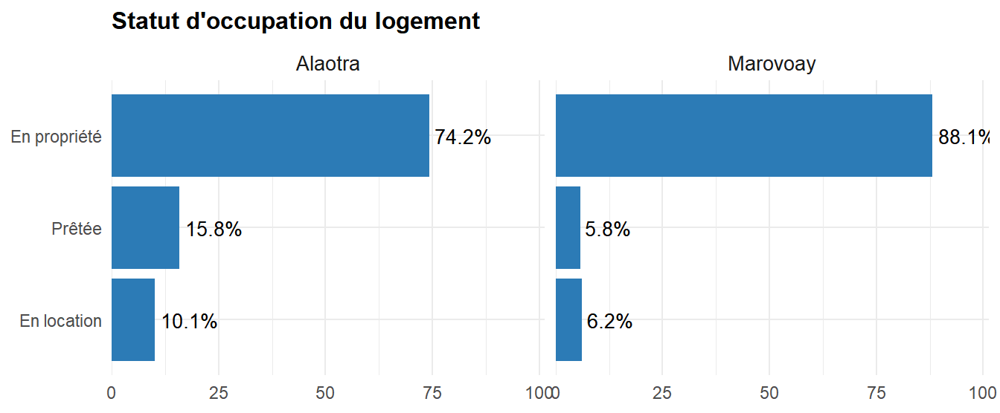
Cette section decrit les conditions d’habitat, les equipements des menages, leurs transferts et revenus.
Les résultats présentés ci-dessous sont provisoires et pourront être ajustés ou enrichis par les informations supplémentaires recueillies lors des restitutions locales.
À Marovoay, les conditions d’habitat sont étroitement liées à la position des ménages par rapport au fleuve Betsiboka. Les fokontany de la rive droite (Bepako, Madiromiongana), situés en lisière du Parc national d’Ankarafantsika, ont un accès plus limité aux ressources en bois et matériaux de construction, notamment en raison des restrictions liées à la conservation. L’approvisionnement en eau dépend en grande partie du fleuve et de puits traditionnels. L’équipement agricole y est dominé par les outils manuels, complétés par le recours à la traction bovine pour le labour des rizières.
Dans l’Alaotra, les conditions d’habitat bénéficient de la relative prospérité du premier bassin rizicole du pays. L’accès à l’eau est facilité par la proximité du lac et du réseau d’irrigation, mais la qualité de l’eau potable reste un enjeu sanitaire. Les ménages des fokontany proches des périmètres irrigués (Avaradrano, Feramanga Atsimo, Mangabe) disposent en moyenne d’un meilleur équipement agricole que ceux des zones périphériques. La possession de biens de confort courants y est plus répandue que dans d’autres observatoires ruraux de Madagascar.
Les conditions d’habitat des ménages enquêtés témoignent des réalités du milieu rural malgache. Le statut d’occupation, le type d’assainissement, l’accès à l’eau, le mode d’éclairage et la source d’énergie de cuisson constituent des indicateurs essentiels du cadre de vie.
Le statut d’occupation du logement traduit la sécurité résidentielle des ménages.
Dans l’Alaotra, 74.2 % des ménages occupent un logement en « En propriété ».
À Marovoay, 88.1 % des ménages occupent un logement en « En propriété », avec des proportions particulièrement élevées dans les localités les plus enclavées. À l’inverse, la location reste plus présente dans les hameaux proches de l’axe routier. Ces disparités traduisent des niveaux différents de sécurité résidentielle selon le positionnement géographique des ménages.
house |> make_bar_obs(x = Statut, title = "Statut d'occupation du logement")
Le type de latrine constitue un indicateur sanitaire fondamental.
Dans l’Alaotra, Le type dominant est « Fosse perdue en commun » (67.1 % des ménages).
À Marovoay, le type dominant est « Dans la nature » (48.2 % des ménages). L’assainissement se caractérise par une forte prévalence de la défécation à l’air libre et une utilisation limitée des latrines améliorées. De nettes disparités territoriales existent entre les localités, les hameaux les plus éloignés présentant les taux d’accès les plus faibles aux infrastructures sanitaires.
latrine |> make_bar_obs(title = obs_title("Types de latrine"))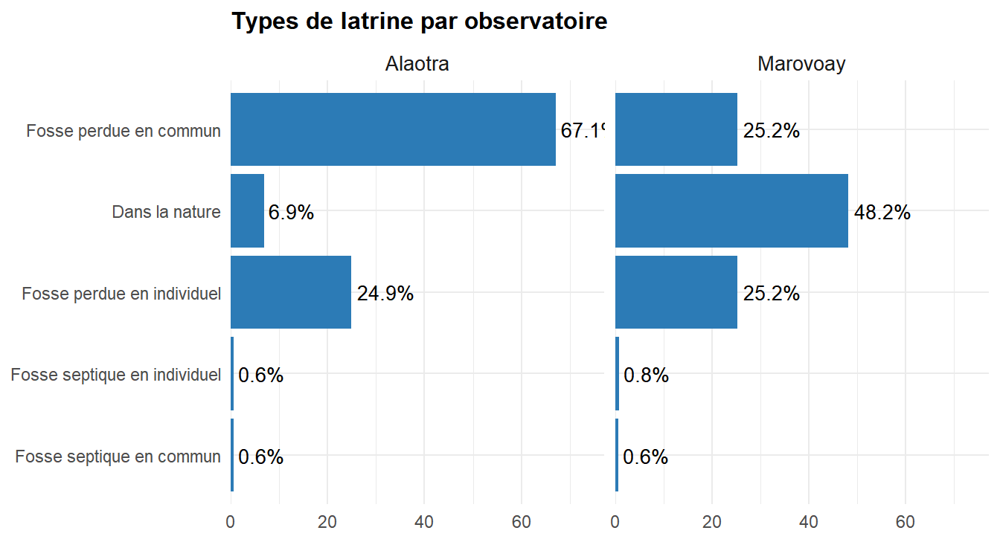
L’approvisionnement en eau détermine en grande partie les conditions sanitaires des ménages ruraux.
Dans l’Alaotra, La source principale est « Borne fontaine publique » (54.9 %).
À Marovoay, la source principale est « Cours d?eau » (37.4 %). Les ménages dépendent fortement des sources naturelles : cours d’eau et puits non aménagés représentent ensemble une part importante de l’approvisionnement. L’accès à l’eau améliorée (bornes fontaines publiques, eau courante) reste limité à l’échelle de l’observatoire, avec des disparités marquées entre localités.
water |> make_bar_obs(title = obs_title("Mode d'approvisionnement en eau"))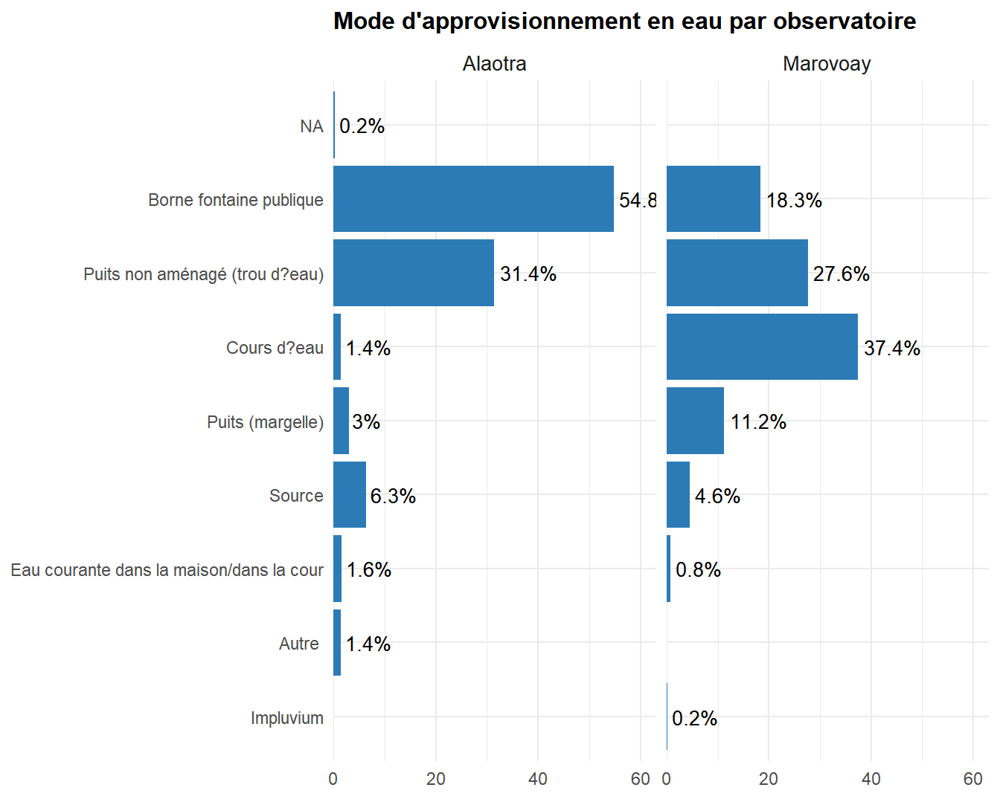
Le mode d’éclairage reflète le niveau d’accès à l’énergie moderne. Les ménages ruraux dépendent encore largement de sources traditionnelles, même si la pénétration du solaire progresse.
light |> make_bar_obs(title = obs_title("Modes d'éclairage"))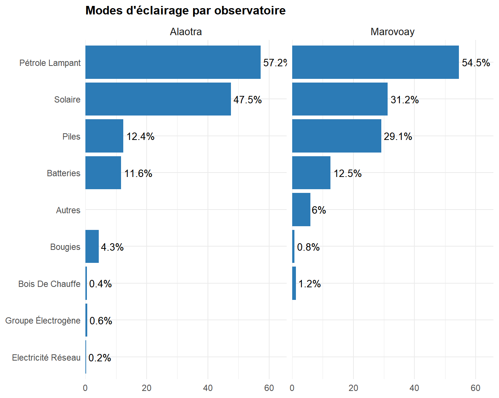
Parmi les ménages utilisant le solaire, la proportion disposant d’un panneau en état de marche est présentée ci-dessous.
solar_users <- res_h |>
left_join(obs_site, by = "j5") |>
filter(h7c == 1, !is.na(h7c1))
solar_status <- solar_users |>
count(Observatory, En_marche = if_else(h7c1 == 1, "Oui", "Non")) |>
mutate(pct = round(n / sum(n) * 100, 1), .by = Observatory) |>
mutate(Valeur = paste0(pct, "%")) |>
select(Observatory, En_marche, Valeur) |>
pivot_wider(names_from = Observatory, values_from = Valeur, values_fill = "-")
gt(solar_status) |>
tab_header(title = "Panneau solaire en état de marche (parmi les utilisateurs du solaire)") |>
cols_label(En_marche = "En marche") |>
style_table()| Panneau solaire en état de marche (parmi les utilisateurs du solaire) | ||
| En marche | Alaotra | Marovoay |
|---|---|---|
| Source : Enquête auprès des OR 2025 | ||
La quasi-totalité des ménages ruraux malgaches dépendent de la biomasse pour la cuisson. La nature exacte du combustible utilisé (bois, charbon de bois) varie selon la disponibilité locale des ressources forestières.
cooking |> make_bar_obs(title = obs_title("Modes de cuisson"))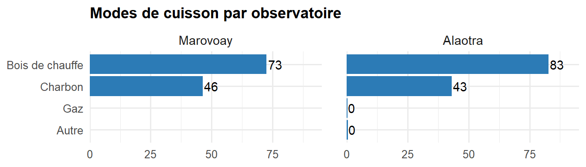
La possession de biens durables constitue un proxy classique du niveau de vie des ménages en milieu rural, où les revenus monétaires sont souvent difficiles à mesurer.
Les biens de confort courant (mobilier, ustensiles, outils) renseignent sur le niveau d’équipement quotidien des ménages et constituent un indicateur de bien-être matériel.
comfort |> make_bar_obs(title = obs_title("Biens de confort courants"))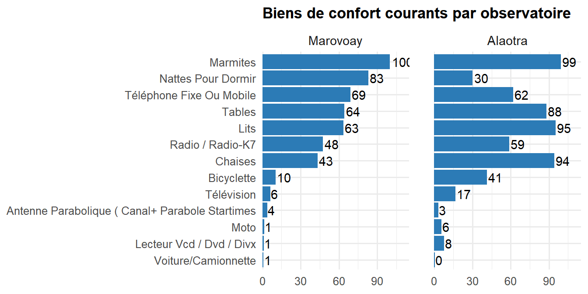
L’équipement agricole conditionne la productivité et la capacité d’extension des surfaces cultivées. La possession de matériel mécanisé ou de traction animale constitue un facteur de différenciation important entre les ménages.
table_equip |>
make_bar_obs(x = Equipement, y = pct_menages,
title = obs_title("Équipements agricoles"), ncol = 1)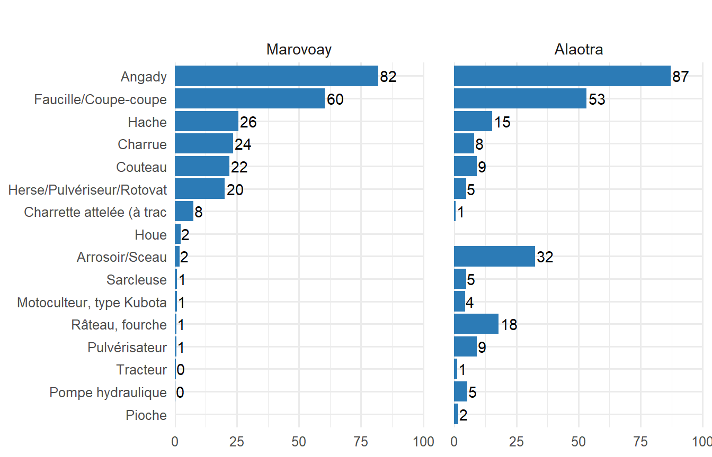
L’accès aux technologies de communication et d’information constitue un vecteur de connexion aux marchés, aux services et à l’information. La pénétration du téléphone mobile a transformé les pratiques économiques et sociales en milieu rural.
comm |> make_bar_obs(title = obs_title("Matériels de communication"))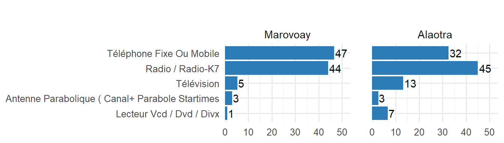
Le fichier res_t2 recense les transferts envoyes par les menages a des personnes exterieures au foyer. Chaque ligne correspond a un destinataire. Les variables cles sont le type de transfert (t21a), le lieu de residence du destinataire (t41), le poids de riz envoye (t42, en kg) et la valeur totale (t21d, en Ar).
res_t2 <- read_dta("data/ROS_MDG_microdata/2025/res_t2.dta") |> mutate(j5 = as.character(j5))
type_transf_labs <- c(
"1" = "Argent", "2" = "Riz", "3" = "Autres produits", "99" = "Autre"
)
res_t2_obs <- res_t2 |>
left_join(obs, by = "j5") |>
mutate(
Type = if_else(
as.character(as.integer(t21a)) %in% names(type_transf_labs),
type_transf_labs[as.character(as.integer(t21a))],
"Non precise"
)
)val_par_type <- res_t2_obs |>
expand_sites_for_profile() |>
filter(!is.na(t21d), t21d > 0) |>
summarise(
n = n(),
val_moy = round(mean(t21d, na.rm = TRUE)),
val_med = round(median(t21d, na.rm = TRUE)),
.by = c(Observatory, Type)
) |>
filter(n >= 5)val_par_type |>
mutate(val_moy_k = val_moy / 1000) |>
make_bar_obs(x = Type, y = val_moy_k,
y_label = "Valeur moyenne (milliers Ar)", show_pct = FALSE)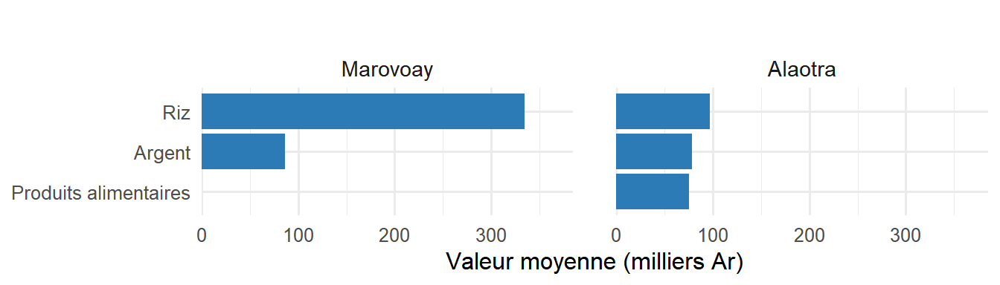
n_t2 <- res_t2_obs |>
summarise(n_envoyeurs = n_distinct(j5), .by = Observatory) |>
left_join(res_deb |> count(Observatory, name = "n_total"), by = "Observatory") |>
mutate(pct = round(n_envoyeurs / n_total * 100, 1))
n_t2 |>
gt() |>
tab_header(title = "Menages envoyant des transferts") |>
cols_label(n_envoyeurs = "Nb envoyeurs", n_total = "Nb menages total", pct = "% envoyeurs") |>
style_table()| Menages envoyant des transferts | |||
| Observatory | Nb envoyeurs | Nb menages total | % envoyeurs |
|---|---|---|---|
| Source : Enquête auprès des OR 2025 | |||
dest_labs <- c(
"1" = "Meme commune", "2" = "Autre commune, meme region",
"3" = "Autre region", "4" = "Etranger"
)
dest_data <- res_t2_obs |>
expand_sites_for_profile() |>
filter(!is.na(t41)) |>
mutate(
Destination = if_else(
as.character(as.integer(t41)) %in% names(dest_labs),
dest_labs[as.character(as.integer(t41))],
"Non precise"
)
) |>
count(Observatory, Destination) |>
mutate(pct = round(n / sum(n) * 100, 1), .by = Observatory)dest_data |>
make_bar_obs(x = Destination, y_label = "% des transferts")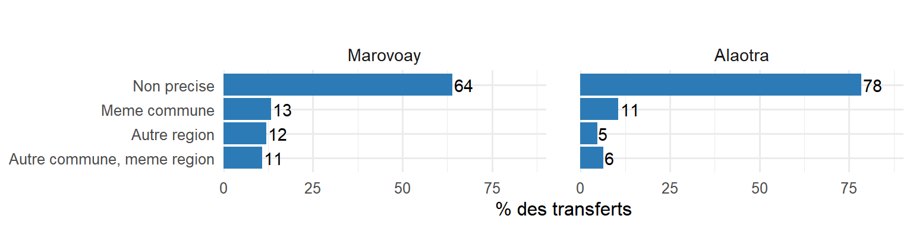
Les revenus presentes ici sont des revenus annuels par menage, calcules sur la periode de reference (PR) de la campagne 2025. Le revenu total (revtot) se decompose en revenu courant (revcou) et revenu exceptionnel (revexcept).
Le revenu courant agrege sept composantes :
revsec) : remuneration du travail salarie agricole ;revppal) : remuneration du travail salarie hors agriculture ;rev_indep) : revenus des activites liberales et artisanales non-agricoles ;rev_riz) : valeur de la production de riz moins les charges ;rev_cu) : meme logique pour les cultures non-rizicoles ;revel) : ventes d’animaux et produits d’elevage ;revpeche).Le revenu exceptionnel regroupe les rentes foncieres, les autres revenus, le travail HIMO, la decapitalisation et les transferts recus.
source("utils/calc_incomes_all_years.R")
inc <- compute_income_year(2025) |>
left_join(obs, by = "j5")Le revenu total annuel par ménage synthétise l’ensemble des ressources monétaires et non-monétaires. Les écarts entre moyenne et médiane reflètent le degré d’inégalité au sein de chaque observatoire.
inc |>
summarise(
`Nb menages` = n(),
Moyenne = round(mean(revtot, na.rm = TRUE)),
Mediane = round(median(revtot, na.rm = TRUE)),
`Ecart-type` = round(sd(revtot, na.rm = TRUE)),
Minimum = round(min(revtot, na.rm = TRUE)),
Maximum = round(max(revtot, na.rm = TRUE)),
.by = Observatory
) |>
gt() |>
tab_header(
title = "Revenu total annuel par menage et par observatoire (Ar/an)",
subtitle = "Campagne 2025"
) |>
fmt_number(columns = Moyenne:Maximum, use_seps = TRUE, decimals = 0) |>
style_table()| Revenu total annuel par menage et par observatoire (Ar/an) | ||||||
| Campagne 2025 | ||||||
| Observatory | Nb menages | Moyenne | Mediane | Ecart-type | Minimum | Maximum |
|---|---|---|---|---|---|---|
| Source : Enquête auprès des OR 2025 | ||||||
La décomposition du revenu courant en ses sept composantes met en lumière la structure productive de chaque observatoire et le degré de dépendance à l’égard de la riziculture.
decomp <- inc |>
summarise(
`Salaires agricoles` = mean(revsec, na.rm = TRUE),
`Salaires non-agricoles` = mean(revppal, na.rm = TRUE),
`Revenus independants` = mean(rev_indep, na.rm = TRUE),
`Revenu net rizicole` = mean(rev_riz, na.rm = TRUE),
`Revenu net autres cultures` = mean(rev_cu, na.rm = TRUE),
Elevage = mean(revel, na.rm = TRUE),
Peche = mean(revpeche, na.rm = TRUE),
.by = Observatory
) |>
pivot_longer(-Observatory, names_to = "Composante", values_to = "Montant") |>
pivot_wider(names_from = Observatory, values_from = Montant)
obs_cols <- setdiff(names(decomp), "Composante")
totaux <- colSums(decomp[obs_cols])
decomp_pct <- decomp |>
mutate(across(all_of(obs_cols), ~ . / totaux[cur_column()] * 100))
total_montants <- as.list(totaux)
total_pct <- as.list(setNames(rep(100, length(obs_cols)), obs_cols))
decomp_display <- bind_cols(
decomp,
decomp_pct |> select(all_of(obs_cols)) |> rename_with(~ paste0(., " (%)"))
)
total_display <- tibble(
Composante = "Total revenu courant",
!!!total_montants,
!!!setNames(total_pct, paste0(names(total_pct), " (%)"))
)
bind_rows(decomp_display, total_display) |>
gt() |>
tab_header(
title = "Decomposition du revenu courant moyen par menage (Ar/an)",
subtitle = "Campagne 2025"
) |>
fmt_number(columns = all_of(obs_cols), use_seps = TRUE, decimals = 0) |>
fmt_number(columns = ends_with("(%)"), decimals = 1) |>
tab_style(
style = cell_text(weight = "bold"),
locations = cells_body(rows = Composante == "Total revenu courant")
) |>
style_table()| Decomposition du revenu courant moyen par menage (Ar/an) | ||||
| Campagne 2025 | ||||
| Composante | Alaotra | Marovoay | Alaotra (%) | Marovoay (%) |
|---|---|---|---|---|
| Source : Enquête auprès des OR 2025 | ||||
inc |>
summarise(
`Salaires agricoles` = mean(revsec, na.rm = TRUE),
`Salaires non-agricoles` = mean(revppal, na.rm = TRUE),
`Revenus independants` = mean(rev_indep, na.rm = TRUE),
`Revenu net rizicole` = mean(rev_riz, na.rm = TRUE),
`Revenu net autres cultures` = mean(rev_cu, na.rm = TRUE),
Elevage = mean(revel, na.rm = TRUE),
.by = Observatory
) |>
pivot_longer(-Observatory, names_to = "Composante", values_to = "Montant") |>
ggplot(aes(x = Observatory, y = Montant, fill = Composante)) +
geom_col(position = "fill") +
scale_y_continuous(labels = percent) +
labs(x = NULL, y = "Part du revenu courant", fill = NULL) +
theme_ror()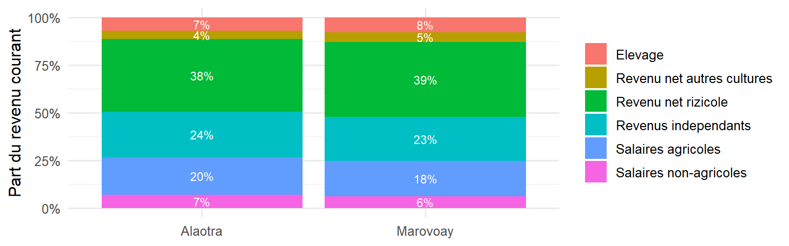
La distribution du revenu total illustre le degré d’inégalité au sein de chaque observatoire. L’utilisation d’une échelle logarithmique permet de mieux visualiser l’étalement de la distribution et la concentration des ménages à bas revenus.
inc |>
filter(revtot > 0) |>
ggplot(aes(x = revtot, fill = Observatory)) +
geom_density(alpha = 0.5) +
scale_x_log10(labels = label_comma()) +
labs(x = "Revenu total annuel (Ar, echelle log)", y = "Densite", fill = "Observatoire") +
theme_ror()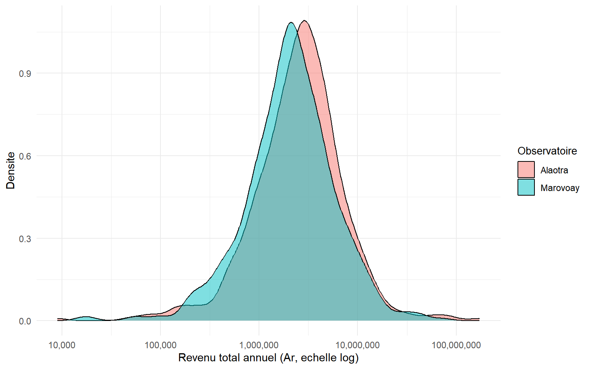
La distinction entre revenu courant (activités régulières) et revenu exceptionnel (transferts, décapitalisation, travaux HIMO) renseigne sur la durabilité des ressources des ménages. Un poids élevé du revenu exceptionnel peut signaler une vulnérabilité économique.
inc |>
summarise(
`Revenu courant` = round(mean(revcou, na.rm = TRUE)),
`Revenu exceptionnel` = round(mean(revexcept, na.rm = TRUE)),
`Revenu total` = round(mean(revtot, na.rm = TRUE)),
`Part courant (%)` = round(mean(revcou, na.rm = TRUE) / mean(revtot, na.rm = TRUE) * 100, 1),
.by = Observatory
) |>
gt() |>
tab_header(
title = "Revenu courant et revenu exceptionnel moyens par menage (Ar/an)",
subtitle = "Campagne 2025"
) |>
fmt_number(
columns = c(`Revenu courant`, `Revenu exceptionnel`, `Revenu total`),
use_seps = TRUE, decimals = 0
) |>
style_table()| Revenu courant et revenu exceptionnel moyens par menage (Ar/an) | ||||
| Campagne 2025 | ||||
| Observatory | Revenu courant | Revenu exceptionnel | Revenu total | Part courant (%) |
|---|---|---|---|---|
| Source : Enquête auprès des OR 2025 | ||||
Certains menages presentent un revenu courant negatif, principalement en raison de charges agricoles superieures aux produits (mauvaises recoltes, couts d’intrants eleves).
inc |>
summarise(
`Nb ménages` = n(),
`% revenu courant <= 0` = round(mean(revcou <= 0, na.rm = TRUE) * 100, 1),
`% revenu total <= 0` = round(mean(revtot <= 0, na.rm = TRUE) * 100, 1),
.by = Observatory
) |>
gt() |>
tab_header(title = "Ménages à revenu courant ou total négatif ou nul") |>
style_table()| Ménages à revenu courant ou total négatif ou nul | |||
| Observatory | Nb ménages | % revenu courant <= 0 | % revenu total <= 0 |
|---|---|---|---|
| Source : Enquête auprès des OR 2025 | |||
Les observatoires de Marovoay et d’Alaotra disposent de series longues permettant de suivre l’evolution des revenus sur trois decennies. Les donnees couvrent 1995-2008 et 2010-2014 pour Marovoay, 1999-2008 et 2010-2014 pour Alaotra, ainsi que la campagne 2025 pour les deux. Les annees 2009 et 2015-2024 ne contiennent pas ces observatoires. Le trait pointille materialise l’absence de donnees.
trends |> make_trend_plot(revtot_mean, "Revenu total moyen (Ar/menage/an)")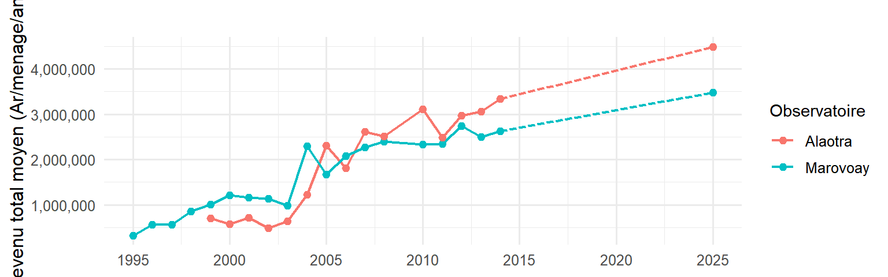
trends |> make_trend_plot(revcou_mean, "Revenu courant moyen (Ar/menage/an)")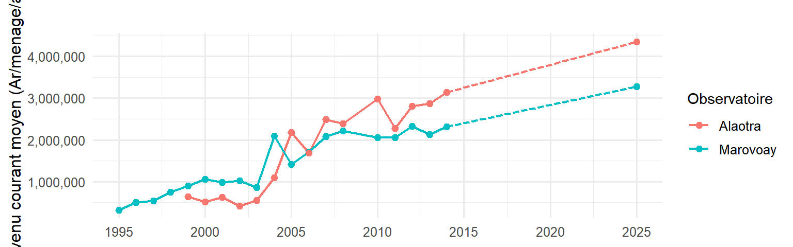
# Note: certaines composantes (rev_cu en 2002-2004) sont negatives en raison
# de charges superieures aux recettes. On utilise geom_col qui gere
# correctement les valeurs negatives (barres sous l'axe zero).
trends |>
select(year, Observatory,
`Salaires agricoles` = revsec_mean,
`Salaires non-agricoles` = revppal_mean,
`Revenus independants` = rev_indep_mean,
`Revenu net rizicole` = rev_riz_mean,
`Revenu net autres cultures` = rev_cu_mean,
Elevage = revel_mean,
Peche = revpeche_mean) |>
pivot_longer(-c(year, Observatory), names_to = "Composante", values_to = "Montant") |>
ggplot(aes(x = factor(year), y = Montant, fill = Composante)) +
geom_col(position = "stack") +
facet_wrap(~Observatory) +
scale_y_continuous(labels = label_comma()) +
labs(x = NULL, y = "Revenu courant moyen (Ar/menage/an)", fill = NULL) +
theme_ror() +
theme(axis.text.x = element_text(angle = 45, hjust = 1, size = 7),
legend.position = "bottom")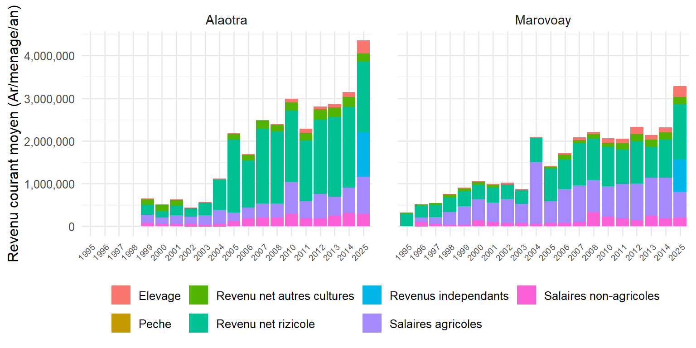
La comparaison des revenus sur longue periode necessite de tenir compte de l’inflation. Nous utilisons ici l’IPC national publie par la Banque Mondiale (indicateur FP.CPI.TOTL, base 2010 = 100). Cet indice est calcule a partir d’un panier de consommation urbain ; il ne reflete donc qu’imparfaitement l’evolution des prix en milieu rural. Pour 2024-2025, non encore publies par la Banque Mondiale, l’IPC est extrapole a +9 % par an.
Une prochaine version de ce rapport integrera un IPC regional (Boeny pour Marovoay, Alaotra-Mangoro pour Alaotra), extrait des series de l’INSTAT ou des enquetes EPM, afin de mieux capter l’inflation locale.
cpi_series <- trends |>
distinct(year, cpi) |>
filter(!is.na(cpi)) |>
arrange(year)
cpi_series |>
ggplot(aes(x = year, y = cpi)) +
geom_line(linewidth = 0.8) +
geom_point(size = 2) +
geom_hline(yintercept = 100, linetype = "dashed", colour = "grey50") +
annotate("text", x = 2011, y = 105, label = "Base 2010 = 100",
hjust = 0, size = 3, colour = "grey40") +
scale_x_continuous(breaks = seq(1995, 2025, 5)) +
labs(x = NULL, y = "IPC national (base 2010 = 100)") +
theme_ror()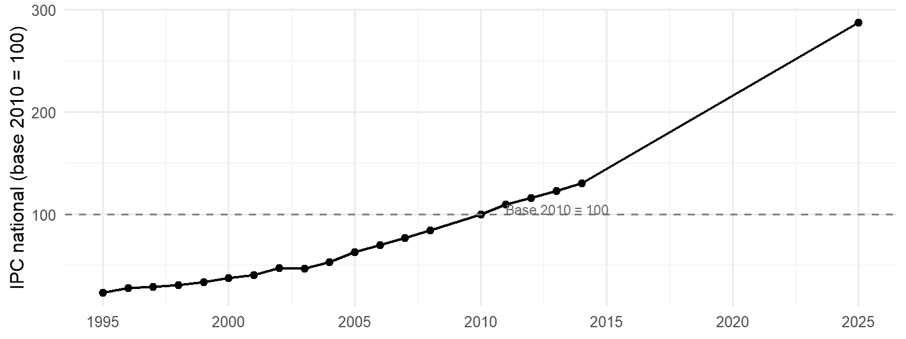
Le prix de vente median du paddy, calcule a partir des ventes declarees par les menages (dc24 dans res_dc21), fournit un indicateur complementaire de l’inflation locale.
trends |> make_trend_plot(prix_paddy_median, "Prix median du paddy (Ar/kg)")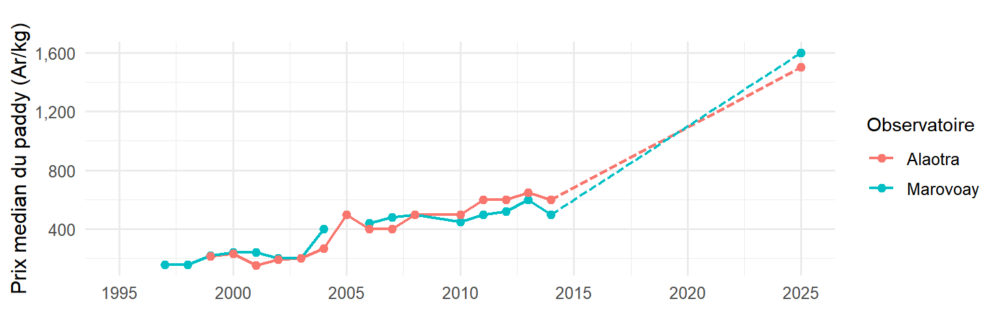
paddy_2010 <- trends |>
filter(year == 2010) |>
select(Observatory, paddy_base = prix_paddy_median)
index_paddy <- trends |>
left_join(paddy_2010, by = "Observatory") |>
mutate(indice_paddy = prix_paddy_median / paddy_base * 100) |>
select(year, Observatory, indice_paddy)
index_cpi <- cpi_series |>
mutate(Indicateur = "IPC national") |>
rename(indice = cpi)
index_all <- index_paddy |>
mutate(Indicateur = paste0("Prix paddy ", Observatory)) |>
rename(indice = indice_paddy) |>
select(year, Indicateur, indice) |>
bind_rows(index_cpi)
index_all |>
ggplot(aes(x = year, y = indice, colour = Indicateur)) +
geom_line(linewidth = 0.8) +
geom_point(size = 1.5) +
geom_hline(yintercept = 100, linetype = "dashed", colour = "grey50") +
scale_x_continuous(breaks = seq(1995, 2025, 5)) +
labs(x = NULL, y = "Indice (base 100 en 2010)", colour = NULL) +
theme_ror()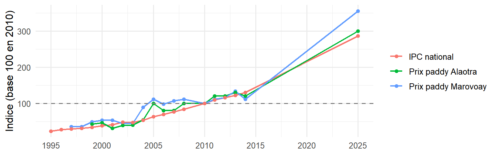
Les revenus nominaux sont convertis en Ariary constants (base 2010) en divisant par l’IPC national. Ceci permet d’evaluer l’evolution du pouvoir d’achat, sous reserve des limites du deflateur urbain.
trends |> make_trend_plot(revtot_real, "Revenu total reel moyen (Ar constants 2010)")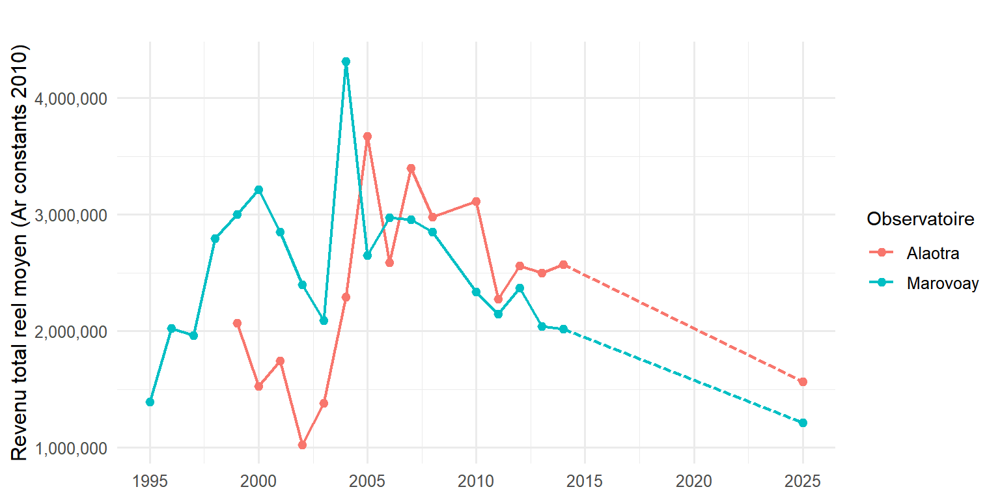
trends |> make_trend_plot(revcou_real, "Revenu courant reel moyen (Ar constants 2010)")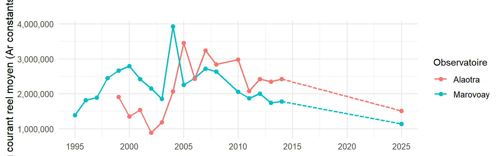
Le prix du paddy, produit central de ces economies rizicoles, offre un deflateur alternatif plus proche de la realite locale que l’IPC national. Les revenus sont ici exprimes en equivalent-paddy a prix 2010, c’est-a-dire divises par l’indice du prix median du paddy de chaque observatoire (base 2010 = 1). Ce deflateur est propre a chaque observatoire.
trends |> make_trend_plot(revtot_paddy, "Revenu total reel moyen (Ar constants paddy 2010)")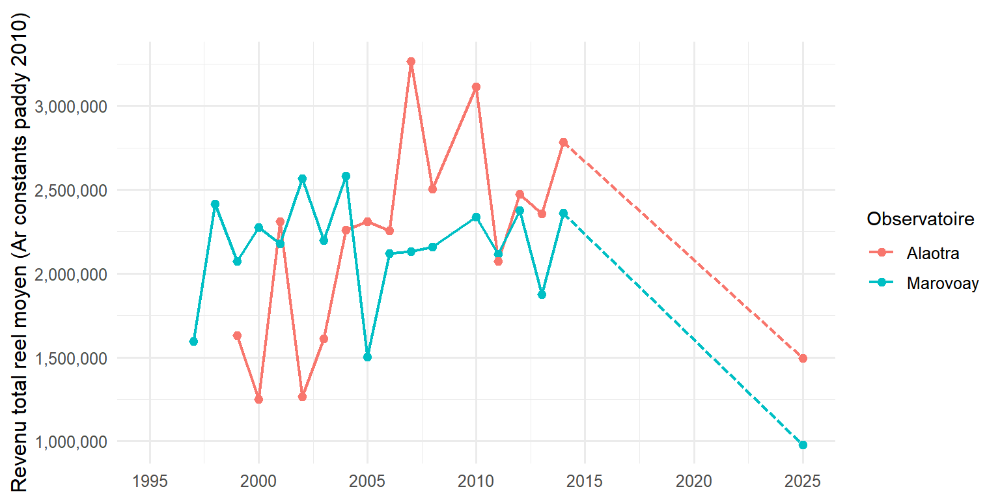
trends |> make_trend_plot(revcou_paddy, "Revenu courant reel moyen (Ar constants paddy 2010)")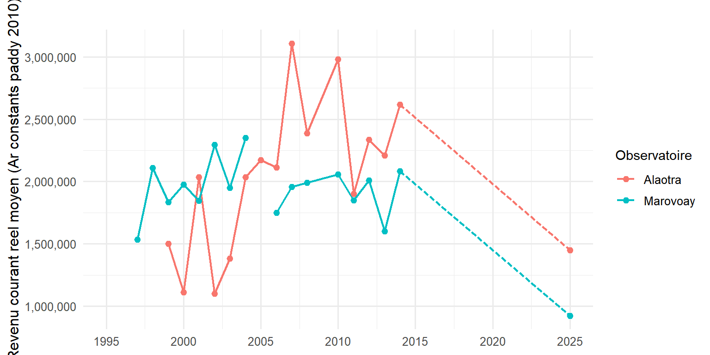
Les donnees sur l’habitat permettent de suivre l’evolution de la source d’eclairage (acces a l’electricite) et de la source d’eau principale sur la periode couverte.
if ("pct_elec" %in% names(habitat_trends)) {
ggplot(mapping = aes(x = year, y = pct_elec, colour = Observatory)) +
geom_line(data = hab_solid |> filter(!is.na(pct_elec)), linewidth = 0.8) +
geom_line(data = hab_gap |> filter(!is.na(pct_elec)), linewidth = 0.8, linetype = "31") +
geom_point(data = habitat_trends |> filter(!is.na(pct_elec)), size = 2) +
scale_x_continuous(breaks = seq(1995, 2025, 5)) +
scale_y_continuous(limits = c(0, NA)) +
labs(x = NULL, y = "% de menages avec electricite", colour = "Observatoire") +
theme_ror()
}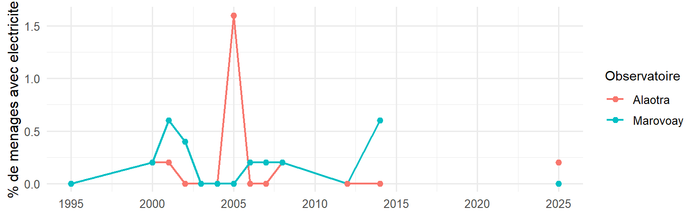
if ("pct_eau_amelioree" %in% names(habitat_trends)) {
ggplot(mapping = aes(x = year, y = pct_eau_amelioree, colour = Observatory)) +
geom_line(data = hab_solid |> filter(!is.na(pct_eau_amelioree)), linewidth = 0.8) +
geom_line(data = hab_gap |> filter(!is.na(pct_eau_amelioree)), linewidth = 0.8, linetype = "31") +
geom_point(data = habitat_trends |> filter(!is.na(pct_eau_amelioree)), size = 2) +
scale_x_continuous(breaks = seq(1995, 2025, 5)) +
scale_y_continuous(limits = c(0, 100)) +
labs(x = NULL, y = "% de menages avec eau amelioree", colour = "Observatoire") +
theme_ror()
}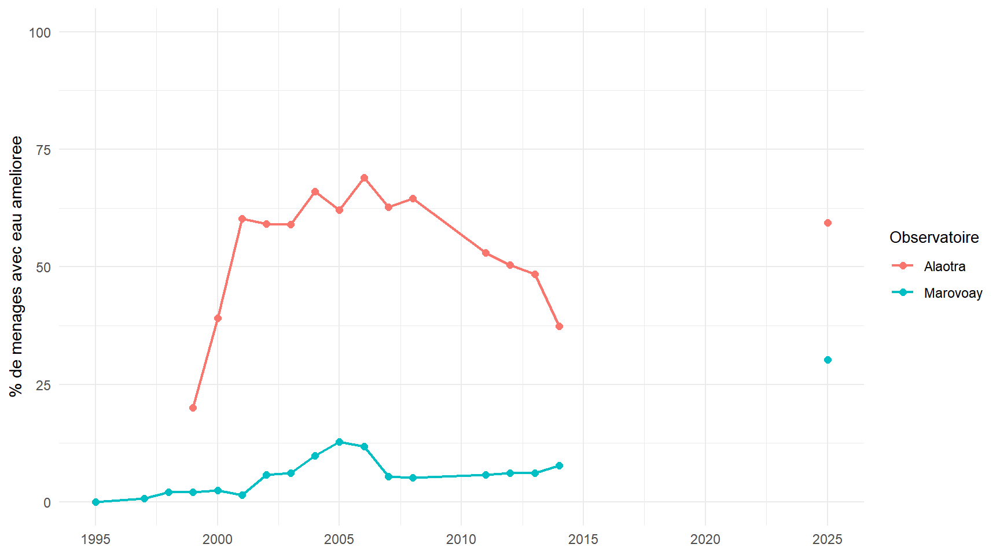
{kind=link}
{kind=link}
{kind=link}
{kind=link}
{kind=link}
{kind=link}
{kind=link}
{kind=link}
{kind=link}
{kind=link}
{kind=link}
{kind=link}
{kind=link}
{kind=link}
{kind=link}
{kind=link}
{kind=link}
{kind=link}
{kind=link}
{kind=link}
{kind=link}
{kind=link}